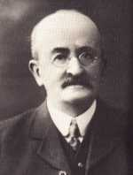

History

The Cork Constitution was a well read newspaper of the day in the last decade of the 1800s.
It was a news sheet that did not publish on Sundays, thus allowing the staff to be free on Saturday afternoons.
It was decided to form a cricket club. But cricket is a summer pursuit and obviously prompted by the enjoyment
derived from their summer activities, thoughts turned to a winter activity and to rugby football in particular.
Some of the staff were very proficient in several sports not least one David Kilroy, who was an all-rounder in the
true sense.
With the cricket club firmly established, the rugby club came into existence in 1892.
It was Kilroy who inspired the hearts of his colleagues. But he was no purveyor of mere words.
He stood ready to lead by precept and example and he was to see his club rise from humble beginnings that embraced rugby in a rather crude from played in primitive conditions on an adhoc basis.
Kilroy believed he had the men to lift the club from out of that scene into the big time.
How correct he was in his assessment of the talent and the men at his disposal.